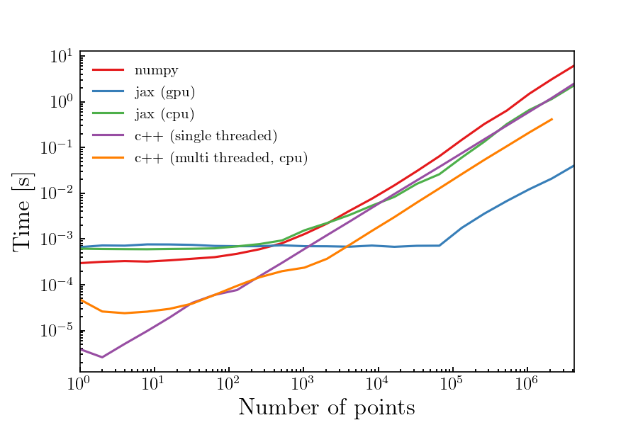

Using jax to integrate N-body phase space
Table of Contents
Introduction
In phenomenological studies of quantum field theory, it is very common compute cross sections or decay widths of some annihilation or decay process. These computations require evaluation of an integral over phase space. For a process with an initial state of momentum $P$ and transitioning into a final state with $N$ particles with momenta $p_{1},\dots,p_{N}$, the phase space integral is:
$$ \begin{align} \mathrm{LIPS} &= \qty(\prod_{i=1}^{N}\int\frac{\dd[3]{\boldsymbol{p}_{i}}}{(2\pi)^{3}2E_{i}})\qty(2\pi)^{4}\delta^{4} \qty(P-\sum_{i=1}^{N}p_{i})\abs{\mathcal{M}}^{2} \end{align} $$
with $E_{i}$ being the energy of the $i^{\mathrm{th}}$ final state particle, and $\mathcal{M}$ the matrix element for the process. When the process includes more than two or three particles in the final state, computing the cross section or width becomes difficult. In these cases, we often need to resort to numerical integration. However, standard quadrature techniques are often much too slow. The standard approach is to use Monte Carlo integration (often with importance sampling, stratified sampling or other techniques.) For these integration to be reasonably fast, the code needs to be written is a compiled (or just-in-time compiled) language.
In this post, we will investigate how well the jax library does in performing this
integration. We will compare the jax implementation to an equivalent numpy
implementation as well as a multi-threaded c++ implementation. This post is organized
as follows. First, we introduce the algorithm used to perform the integration. We then
present the jax implemenation of the algorithm and demonstate with a simple example.
Lastly, we show some simple benchmarks between jax, numpy and C++.
The algorithm: RAMBO
The RAMBO algorithm is rather simple. At a high-level, the algorithm is:
- Generate $N$ massless, isotropic momenta $q_{i}$ with energy components distributed according to $q^{0}_{i} \exp(-q^{0}_{i})$.
- Lorentz boost the $q_{i}$, producing new massless momenta $p_{i}$ which conserve momenta and have the correct center-of-mass energy.
- Rescale the $p_{i}$, producing new momenta $k_{i}$ which have correct masses.
- Compute the weight of the phase-space point.
In our first step, we enforce the energies to be distributed according to $q^{0}_{i} \exp(-q^{0}_{i})$ simply because it results in a simple measure, making the calculation of the phase space density easy. Steps two and three are done in such a way that the calculation of the phase space density in the final step is straight forward.
Without much explanation, we will give the detailed algorithm.
(1) Generate $q^{\mu}_{i}$
To generate the $q_{i}$, choose $4N$ random numbers: $\rho^{(1)}_{i}, \rho^{(2)}_{i}, \rho^{(3)}_{i}, \rho^{(4)}_{i}$. The $q_{i}$’s are then:
$$ \begin{align} q^{0}_{i} &= e_{i}, & q^{1}_{i} &= e \cos(\phi_{i}) \sqrt{1 - z_{i}^{2}}, & q^{2}_{i} &= e \sin(\phi_{i}) \sqrt{1 - z_{i}^{2}}, & q^{3}_{i} &= e \cos(\theta_{i}).\\ \end{align} $$
with $e$, $z_{i}$ and $\phi_{i}$ given by:
$$ \begin{align} e &= -\log(\rho^{(3)}_{i} \rho^{(4)}_{i}), & z_{i} &= 2\rho^{(1)}_{i}-1, & \phi &= 2\pi \rho^{(2)}_{i} \end{align} $$
(2) Boost: generate $p^{\mu}_{i}$
The boosted momenta are:
$$ \begin{align} p^{0}_{i} &= x \qty(\gamma q^{0}_{i} + \boldsymbol{b}\cdot\boldsymbol{q}_{i}), & \boldsymbol{p}_{i} &= x \qty(\qty(a \boldsymbol{b}\cdot\boldsymbol{q}_{i} + q_{i}^{0}) \boldsymbol{b} + \boldsymbol{q}_{i}). \end{align} $$
where the various undeclared variables are:
$$ \begin{align} x &= E\_{\mathrm{cme}} / M, & \gamma & = Q^{0} / M, & a &= \frac{1}{1+\gamma}, \\ Q &= \sum_{j=1}^{N}q_{i}, & M &= \sqrt{Q\cdot Q}, & \boldsymbol{b} &= -\frac{1}{M}\mqty(Q^{1} & Q^{2} & Q^{3}). \end{align} $$
(3) Correct the masses: generate $k^{\mu}_{i}$
The $k^{\mu}_{i}$ are computed using:
$$ \begin{align} k^{0}_{i} &= \sqrt{\qty(\xi p^{0}_{i})^2 + m_{i}^{2}}, & \boldsymbol{k}_{i} &= \xi \boldsymbol{p}_{i} \end{align} $$
where $\xi$ is the solution to:
$$ \begin{align} 0 = E_{\mathrm{cm}} - \sum_{j=1}^{N}\sqrt{m_{j}^{2} + \qty(\xi p_{j}^{0})^{2}} \end{align} $$
This equation can be solved using Newton or Halley iterations. Typically it converges in a few steps.
(4) Computing the weight
The weight is computed using
$$ \begin{align} w &= \frac{\qty(\frac{\pi}{2})^{N-1} \qty(E_{\mathrm{cm}})^{2N-3} \qty(2\pi)^{4-3N}}{(N-1)! (N-2)!} {\qty(\sum_{j=1}^{N}\frac{\abs{\boldsymbol{k}_{j}}}{E_{\mathrm{cm}}})} {\qty(\sum_{j=1}^{N}\frac{\abs{\boldsymbol{k}_{j}}^{2}}{k^{0}_{i}})}^{-1} {\qty(\prod_{j=1}^{N}\frac{\abs{\boldsymbol{k}_{j}}}{k^{0}_{i}})} \end{align} $$
The Jax implementation
Implementing the aforementioned algorithm using jax is definitely a learning
experience on how to use jax. If you’re familiar with jax, the
implementation is a breeze. We will be writing a few function that will make the
functions we need to implement the algorithm. Before we get into it, let’s explain
the general structure of the function we will make.
Each function we will construct will work on a tensor of shape $(4, N, M)$,
where $N$ is the number of final state particles and $M$ is the size of a batch
to be worked on. If p is the tensor, then p[0,:,:] holds the energies while
p[1,:,:], p[3,:,:], p[4,:,:] hold the $x,y$ and $z$ component’s of the
3-momentum. The p[:,0,:],...,p[:,N-1,:] are the moment for particles 1-N.
The last dimension contains the batch.
All we will need to import is jax and the math module.
import jax
import jax.numpy as jnp
import math
To generate the $q^{\mu}_{i}$, we will create a function that takes in the number of final state particles and the batch size and return the function to compute the momenta.
def make_momenta_initializer(n: int, batch_size: int):
def init(key):
keys = jax.random.split(key, 4)
rho1 = jax.random.uniform(keys[0], shape=(n, batch_size))
rho2 = jax.random.uniform(keys[1], shape=(n, batch_size))
rho3 = jax.random.uniform(keys[2], shape=(n, batch_size))
rho4 = jax.random.uniform(keys[3], shape=(n, batch_size))
ctheta = 2 * rho1 - 1.0
stheta = jnp.sqrt(1.0 - ctheta ** 2)
phi = 2.0 * jnp.pi * rho2
e = -jnp.log(rho3 * rho4)
return jnp.array(
[e, e * stheta * jnp.cos(phi), e * stheta * jnp.sin(phi), e * ctheta]
)
return jax.jit(init)
Next, we write a function to make the boosting function. We given the center-of-mass energy, this is a simple translation of the expressions given above.
def make_momenta_boost(cme):
def boost(ps):
sum_ps = jnp.sum(ps, axis=1)
inv_mass = jnp.sqrt(
sum_ps[0] ** 2 - sum_ps[1] ** 2 - sum_ps[2] ** 2 - sum_ps[3] ** 2
)
inv_mass = 1.0 / inv_mass
bx = -inv_mass * sum_ps[1]
by = -inv_mass * sum_ps[2]
bz = -inv_mass * sum_ps[3]
x = cme * inv_mass
g = sum_ps[0] * inv_mass
a = 1.0 / (1.0 + g)
bdotp = bx * ps[1] + by * ps[2] + bz * ps[3]
fact = a * bdotp + ps[0]
return jnp.array(
[
x * (g * ps[0] + bdotp),
x * (fact * bx + ps[1]),
x * (fact * by + ps[2]),
x * (fact * bz + ps[3]),
]
)
return jax.jit(boost)
Before we can make the function to correct the masses, we need a function to solve $f(\xi) = 0 = \sum\sqrt{m_{i}^{2} + \qty(\xi p_{i}^{0})^{2}} - E_{\mathrm{cm}}$. We will solve this using Newton iterations. Note that the derivative of $f(\xi)$ is given by:
$$ \begin{align} \dv{f}{\xi} = \sum_{j=1}^{N} \frac{\xi\qty(p_{j}^{0})^{2} }{\sqrt{m_{j}^{2} + \qty(\xi p_{j}^{0})^{2}}} \end{align} $$
Defining $f_{i} = \sqrt{m_{i}^{2} + \qty(\xi e_{i})^{2}}$, $e_{i} = p_{i}^{0}$, we have:
$$ \begin{align} f(\xi) &= \sum_{i} f_{i} - E_{\mathrm{cm}}, & \dv{f}{\xi} &= \sum_{i} \frac{\xi e_{i}^{2}}{f_{i}} \end{align} $$
Recall that the Newton iteration requires us to update $\xi$ using
$\xi_{j+1} = \xi_{j}-f(\xi_{j})/f’(\xi_{j})$, starting from $\xi_{0}$. We will take
$\xi_{0}$ to be $\xi_{0} = \sqrt{1 - \qty(M/E_{\mathrm{cm}})^{2}}$ with $M = \sum_{i}m_{i}$.
Note that we can also use jax.jvp to automatically perform the derivative for us. We will show
both method. For similicity, we will use a fixed number of iterations. Usually 10 is more than enough.
def make_correct_masses(cme, masses, iterations):
n = len(masses)
ms = jnp.array(masses).reshape((n, 1))
xi0 = math.sqrt(1.0 - (sum(masses) / cme) ** 2)
def compute_scale_factor(ps):
shape = ps.shape[1:]
e = ps[0]
xi = xi0 * jnp.ones((shape[-1],))
for _ in range(iterations):
# Using jax.jvp:
def func(xi_):
return jnp.sum(jnp.hypot(e * xi_, ms), axis=0) - cme
f, df = jax.jvp(func, (xi,), (jnp.ones_like(xi),))
# by hand:
# deltaf = jnp.hypot(e * xi, ms)
# f = jnp.sum(deltaf, axis=0) - cme
# df = jnp.sum(xi * e ** 2 / deltaf, axis=0)
xi = xi - f / df
return xi
def correct_masses(ps):
xi = compute_scale_factor(ps)
return jnp.array(
[
jnp.hypot(xi * ps[0], ms),
xi * ps[1],
xi * ps[2],
xi * ps[3],
]
)
return jax.jit(correct_masses)
Lastly, we write our function to compute the weights.
def make_compute_weights(n, cme):
pi = jnp.pi
fact_nm2 = math.factorial(n - 2)
fact = 1.0 / ((n - 1) * fact_nm2 ** 2)
base_wgt = (
fact * (0.5 * pi) ** (n - 1) * cme ** (2 * n - 4) * (0.5 / pi) ** (3 * n - 4)
)
def weight_rescale_factor(ps):
modsqr = jnp.sum(ps[1:] ** 2, axis=0)
mod = jnp.sqrt(modsqr)
inveng = 1.0 / ps[0]
t1 = jnp.sum(mod / cme, axis=0) ** (2 * n - 3)
t2 = 1.0 / jnp.sum(modsqr * inveng, axis=0)
t3 = jnp.prod(mod * inveng, axis=0)
return t1 * t2 * t3 * cme
def compute_weights(ps):
return weight_rescale_factor(ps) * base_wgt
return jax.jit(compute_weights)
Lastly, we put it all together, constructing a function that takes in a key and returns the weights and momenta.
def make_generator(cme, masses, iterations, batch_size):
n = len(masses)
init = make_momenta_initializer(n, batch_size)
boost = make_momenta_boost(cme)
correct_masses = make_correct_masses(cme, masses, iterations)
compute_weights = make_compute_weights(n, cme)
def generator(key):
ps = init(key)
ps = boost(ps)
ps = correct_masses(ps)
ws = compute_weights(ps)
return ps, ws
return jax.jit(generator)
Example: Muon decay $\mu^{\pm} \to e^{\pm} + \nu_{\mu} + \nu_{e}$
For an example, we will use our new code to compute the decay width for a muon decaying into an electron and two neutrinos. The analytic expression for the width is given by:
$$ \begin{align} \Gamma &= \frac{G_{F}^{2}m_{\mu}^{5}}{192 \pi^{3}} \end{align} $$
Let’s see if we can obtain this result using our jax code. The below code will
generate weights and momenta for a batch, then compute the average and standard
deviation. After we obtain our results, we divide by $1/(2m_{\mu})$ to obtain
the width $\Gamma$.
def make_compute_decay_width(msqrd, m, fsp_masses, batch_size):
generator = make_generator(m, fsp_masses, 10, batch_size)
def compute_decay_width(key):
ps, ws = generator(key)
ws = ws * msqrd(ps)
avg = jnp.average(ws)
std = jnp.std(ws) / math.sqrt(batch_size)
return avg / (2 * m), std / (2 * m)
return jax.jit(compute_decay_width)
The last piece of the puzzle we need is a function to compute the integrand of the decay width.
MMU = 1.056584e-01 # Mass of the muon in GeV
GF = 1.166379e-05 # Fermi constant in GeV^-2
@jax.jit
def lnorm_sqr(p):
"""
Compute the squared Lorenzian norm of a four-vector.
"""
return p[0, :] ** 2 - p[1, :] ** 2 - p[2, :] ** 2 - p[3, :] ** 2
@jax.jit
def msqrd_mu_to_e_nu_nu(ps):
"""
Compute the squared matrix element for muon decay into an electron
and two neutrinos.
"""
t = lnorm_sqr(ps[:, 0, :] + ps[:, 2, :])
return 16.0 * GF**2 * t * (MMU**2 - t)
Now let’s test it out and make sure things are working correctly:
cme = MMU
masses = [0.0, 0.0, 0.0]
width = GF2 * MMU**5 / (192.0 * jnp.pi**3)
compute_decay_width_jax = make_compute_decay_width(msqrd_mu_to_e_nu_nu, cme, masses, 1 << 19)
percent_error = abs((compute_decay_width_jax(jax.random.PRNGKey(1234)) - width) / width)
print(percent_error)
# output: DeviceArray(0.1358793, dtype=float32)
Before we do some benchmarks against numpy and c++, let’s show the amount of time it takes
for this operation. First, the amount of time for the jit and a single evaluation is:
def compile_and_eval():
compute_decay_width = make_compute_decay_width(msqrd_mu_to_e_nu_nu, MMU, masses, 1 << 19)
compute_decay_width(jax.random.PRNGKey(1234))
%timeit compile_and_eval()
# output: 685 ms ± 7.87 ms per loop (mean ± std. dev. of 7 runs, 1 loop each)
and the time for a single evaluation (after jit) is:
compute_decay_width = make_compute_decay_width(msqrd_mu_to_e_nu_nu, MMU, masses, 1 << 19)
%timeit compute_decay_width(jax.random.PRNGKey(1234))
# output: 3.01 ms ± 7.46 µs per loop (mean ± std. dev. of 7 runs, 100 loops each)
Benchmarks
Now let’s take a look at some benchmarks. We will benchmark a pure numpy
version, two jax versions (one on the CPU and another on the GPU), and two
C++ versions, a single-threaded version and a mutli-threaded version (compiled
with -O3 -march=native). All of these computations are taking place on a
machine with a Ryzen 3900X 12-core, 24-thread CPU and a GeForce 2060 6GB GPU. We
use between 1 and $2^{22}$ for our batch_size. We set the center-of-mass
energy to $100$ and use a 5-body final state with masses $[1,2,3,4,5]$.
Additionally, we use a flat matrix element $\mathcal{M} = 1$.

Unsurprisingly, the C++ versions dominate for small numbers of points ($n \lesssim 500$).
However, we begin to see the power of jax when we cross $n\sim 5000$. The GPU version seems
to be limited only by the data transfer time to the GPU up until 100,000 points, after which
we begin to see the computation cost come into play. Clearly the GPU is the winner in this
case. Interestingly, the jax CPU version is on par with the single-threaded C++ version,
demonstrating that jax is useful even if one doesn’t have a GPU.